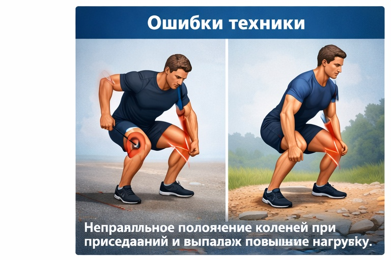
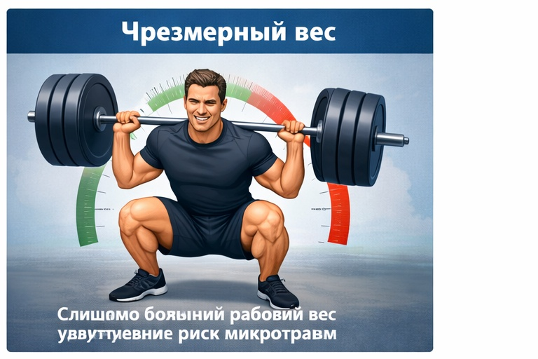
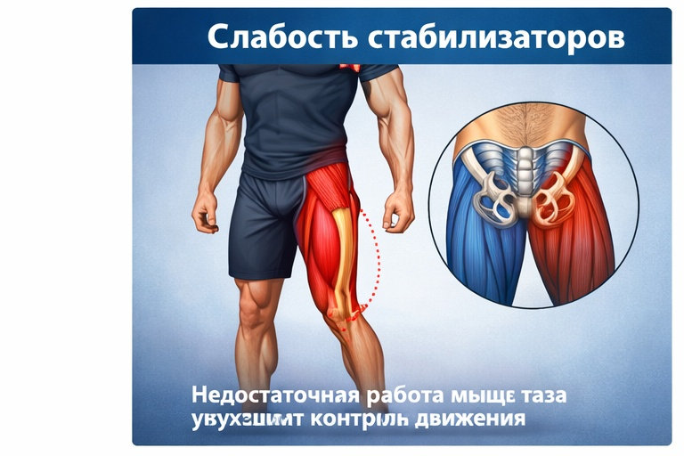
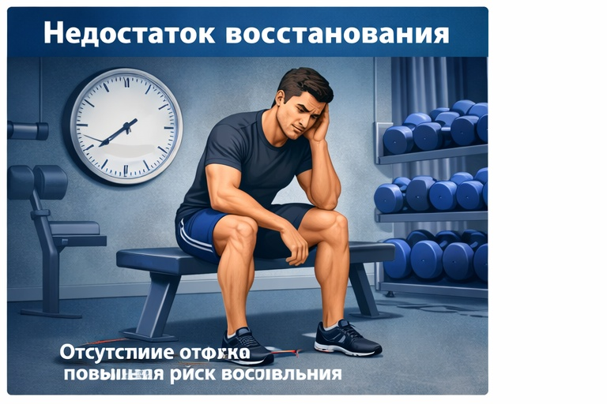

Боль в колене в тренажёрном зале
Почему при силовых упражнениях появляется дискомфорт в колене и как избежать осложнений.
Боль в колене во время занятий в зале чаще всего связана с ошибками техники, чрезмерным весом и нарушением мышечного баланса. Регулярные перегрузки без восстановления могут привести к воспалению и травмам.
Основные причины
Техника упражнений
Ошибки в технике приседаний и выпадов увеличивают нагрузку на коленный сустав.

Неправильная траектория колена меняет распределение нагрузки.
Резкое увеличение веса
Работа с весом, который превышает адаптацию тканей.

Чрезмерный вес создаёт избыточное давление на сустав.
Слабость стабилизаторов
Недостаточная сила ягодичных и бедренных мышц снижает стабильность колена.

Слабые стабилизаторы увеличивают нагрузку на сустав.
Недостаточное восстановление
Частые тренировки без отдыха перегружают суставные структуры.

Тканям требуется время для адаптации к нагрузке.
Другие ситуации с коленом
Если боль мешает прогрессу — важно определить её причину.
Записаться на консультацию